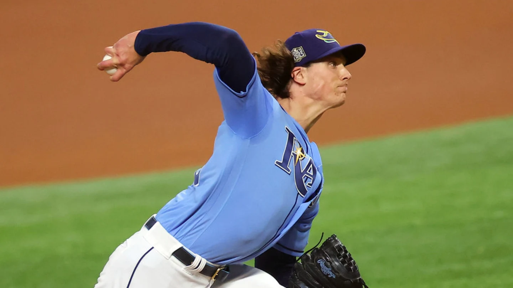

I imagine it must have been difficult to grow too attached to your favorite gladiator if you lived in ancient Rome. No matter how many times you came out to the Colosseum to enjoy a bit of bloodsport and cheer on your preferred champion, there was always the chance that your guy, tough and skilled though he may be, was not making it out of that arena with his life.
Modern sports are much less barbaric than those enjoyed by denizens of the Appian Way, but violence and injury are still omnipresent in the athletic pursuits we enjoy. It's true that sports are making strides even today to be safer than they were in the relatively near past, but while the days of Dick Butkus sending someone to the hospital with a bone-crunching tackle or Bob Gibson throwing fastballs at opposing batters' heads are gone, there are still many other ways that our favorite athletes can be taken off the field of play.
Baseball would probably not have been my first choice when thinking of which major sport would have the most worrisome injury epidemic, but that's exactly where we are at this moment in time. Football and basketball, where athletes are constantly getting bigger, faster and stronger, still have issues with torn ACLs, Achilles' tendons and concussions, but that's nothing compared to the rise in baseball players, specifically pitchers, that are missing time due to injury.
Pitchers are suffering catastrophic injuries at an alarming rate
The baseball season is only two weeks old, and already you could build a dynamite Cy Young ballot with the number of top pitchers that are either missing time due to elbow inflammation or have already been ruled out for the year and possibly longer with tears in their ulnar collateral ligaments. From Kodai Senga and Spencer Strider to Shane Bieber and Framber Valdez, the list of arm injuries to baseball's aces is growing every day, and the aforementioned names are only the tip of the iceberg.
The Wall Street Journal published an article yesterday by Lindsey Adler entitled Baseball's Pitcher Injury Crisis Reaches Maximum Velocity. In it, Adler examined this tragic trend and attempted to answer the questions of what is causing it, and what can be done to stop it?
As baseball and the players association have bickered over who is to blame (injured Yankees ace Gerrit Cole is quoted in the article as saying, "It's like we have divorced parents"), it seems that each side is more interested in villainizing the other than actually solving the problem.
Players have blamed the pitch clock, implemented last year in an attempt to speed up the game, as the culprit behind all of these injuries, but Adler's interview with elbow surgeon Dr. Keith Meister reveals a common thread tying -- or should I say stitching -- most injured aces together: the sweeper.
Until about a year ago, I'd never heard of a sweeper, and I've been an avid baseball fan all my life. I brushed aside the rising popularity of the term as just a fancy new word for a slider, but that's not really what it is. A sweeper acts similarly to a slider but with even more break. Achieving that extra break has a cost though: more wear and tear on the arm of the pitcher, which leads to more injuries.
Throwing a baseball is already an unnatural motion. We've all seen photos of pitchers in mid-delivery, their arms contorted at impossible angles as they release the ball, and wonder how their arm doesn't simply detach from their bodies altogether on their follow-through.
Just look at this:
Tyler Glasnow throws sweeper in game five of the World Series vs. L.A. Dodgers. Photo by: Ronald Martinez/GettyImages
This photo from the 2021 World Series features former Rays ace Tyler Glasnow with his arm bent in a way that seems to defy physics. In retrospect, it's no surprise that the next year, Glasnow would undergo Tommy John surgery, costing himself nearly two years in the process. He's been excellent in four starts this year with his new team, the Dodgers, but fans now feel like they're waiting with bated breath for his next stop on the shelf.
"People care more about forces than they do balance and coordination. No force will ever trump balance and coordination."
- Matt Swope, Maryland baseball headcoach
It should be noted that Glasnow has been vocal in support of pitchers being able to use "sticky stuff" to help them achieve the kind of spin rate that we're talking about here without taxing their bodies as much. This was made a point of emphasis in 2021, shortly before Glasnow got hurt, with the league going so far as to conduct checks on pitchers during games to make sure they weren't using anything to enhance their grip. Maybe this needs to be revisited in light of the increase in pitcher injuries since the sticky stuff ban was enacted.
Let's stick with Glasnow and his new team for a moment longer just to illustrate how dire the situation has become. The Dodgers are baseball's most stacked team, and what's amazing is that they're missing most of their best pitchers because of elbow injuries. Shohei Ohtani won't pitch until at least next year after his elbow surgery in September. Young fireballer Dustin May went under the knife in July. Tony Gonsolin is also out until 2025 after undergoing Tommy John in September, and staff ace Walker Buehler still isn't back from his own Tommy John surgery in 2022. This is just one team!
It seems that nobody in baseball is incentivized to put an end to the quest for more velocity and more break.
In Adler's article, she quotes Driveline Baseball's director of pitching Chris Langin as saying, “The ways that you would lower the injury risk are also the ways you’d be lowering the player's value. At the end of the day, that’s not the business we’re in.”
Baseball insider Ken Rosenthal disputed the validity of this Faustian bargain in a recent episode of Foul Territory, asking how it's in the best interest of teams to constantly lose pitchers for over a year at a time, or for pitchers themselves to constantly go under the knife. I'm in agreement, but like Rosenthal, I also don't know how we can stop pitchers from pushing themselves over the limit in order to reach the big leagues, earn a big free agent contract, or chase a Cy Young. No matter what level a pitcher is at, there will always be an incentive to reach for more and more and more.
The whole situation reminds me a bit of the steroid era, when players tried to get ahead or stay competitive by juicing. This had the snowball effect of incentivizing other players to do the same. "If this guy juiced and set records but I'm a better player, why shouldn't I do it too?" Barry Bonds reportedly was tempted to cheat in part by the adulation that Mark McGwire and Sammy Sosa received for their home run chase in 1998. Baseball contracts are guaranteed, so if an extra couple miles of hour on your fastball and some extra RPMs (Revolutions Per Minute) on your breaking ball can get you an eight- or nine-figure deal, it's tough to argue that a pitcher shouldn't do it, especially when, unlike steroids, increasing pitcher performance in this way is perfectly legal.
Just like steroid users, pitchers that are pushing themselves to the brink are justifying it as necessary to keep up with the rest of baseball. There are, of course, key differences between the steroid epidemic and the Tommy John epidemic, namely the health risks, which come in the form of ligament tears for pitchers but longer-term, hormonal issues for steroid users.
Steroid users also had to reconcile the ethical issues with skirting the rules, whereas pitchers nowadays aren't faced with any such quandary in trying to keep competitive. It's profoundly sad, though, that the choice for many pitchers is either to push themselves to the breaking point or get left behind. All top athletes make sacrifices to master their craft, but virtually guaranteeing serious injury in order to remain competitive is a bridge too far.
The shame of it all is that even without taking into account the rash of pitching injuries across MLB, pitching is in a worse place than it used to be. How can this be when there's such a drive to max out performance? It's because arms are not meant to give max effort, pitch after pitch. As a result, starters rarely make it past the fifth or sixth inning anymore. Complete games are practically extinct. The Mets have played 11 games so far, and already there have been two games in which they had at least three bullpen arms unavailable because they'd already pitched multiple days in a row. How can any staff ever expect to get through a 162-game season?
Players are trading their bodies for glory and that next big payday, and teams are willingly sacrificing them in the interest of short-term gains. The rise of the sweeper and the push for more velocity are bad for baseball, but does anyone care enough to do something about it? Maybe the age of the gladiator isn't actually dead after all. As fans, maybe we just shouldn't grow too attached.
This story has been reproduced as part of coursework for the Philip Merrill College of Journalism at the University of Maryland. It was originally published on Fansided.